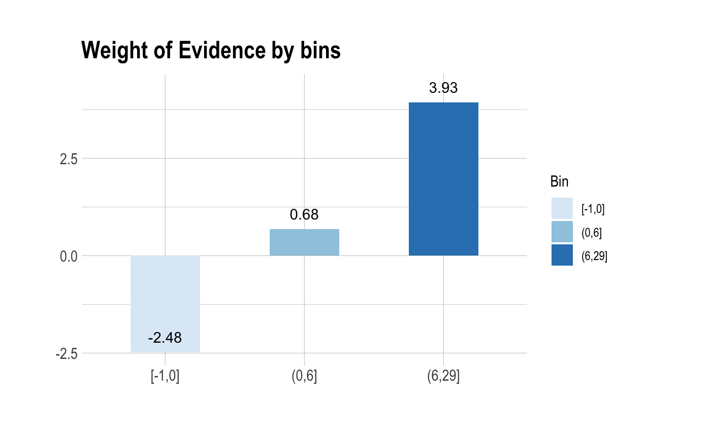
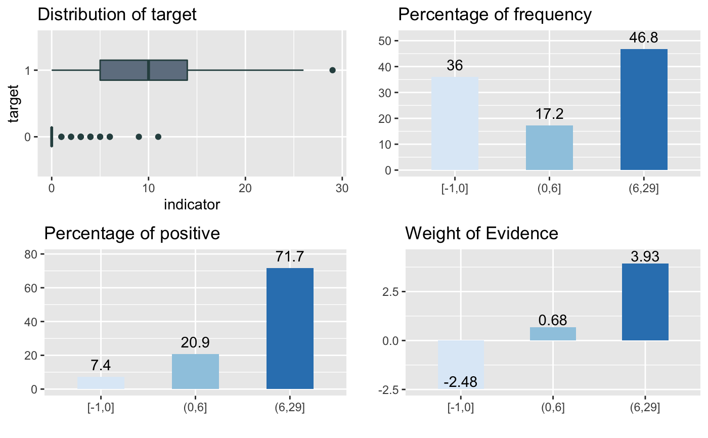

summary method for "optimal_bins". summary metrics to evaluate the performance of binomial classification model.
# S3 method for optimal_bins summary(object, ...)
Arguments
| object | an object of class "optimal_bins", usually, a result of a call to binning_by(). |
|---|---|
| ... | further arguments to be passed from or to other methods. |
Value
NULL.
Details
print() to print only binning table information of "optimal_bins" objects. summary.performance_bin() includes general metrics and result of significance tests life follows.:
Binning Table : Metrics by bins.
CntRec, CntPos, CntNeg, RatePos, RateNeg, Odds, WoE, IV, JSD, AUC.
General Metrics.
Gini index.
Jeffrey's Information Value.
Jensen-Shannon Divergence.
Kolmogorov-Smirnov Statistics.
Herfindahl-Hirschman Index.
normalized Herfindahl-Hirschman Index.
Cramer's V Statistics.
Table of Significance Tests.
See also
Examples
# \donttest{ library(dplyr) # Generate data for the example heartfailure2 <- heartfailure heartfailure2[sample(seq(NROW(heartfailure2)), 5), "creatinine"] <- NA # optimal binning bin <- binning_by(heartfailure2, "death_event", "creatinine")#> Warning: The factor y has been changed to a numeric vector consisting of 0 and 1. #> 'Yes' changed to 1 (positive) and 'No' changed to 0 (negative).bin#> binned type: optimal #> number of bins: 3 #> x #> [0.5,0.9] (0.9,1.8] (1.8,9.4] <NA> #> 80 167 47 5#> ── Binning Table ──────────────────────── Several Metrics ── #> Bin CntRec CntPos CntNeg RatePos RateNeg Odds WoE IV #> 1 [0.5,0.9] 80 9 71 0.09375 0.34975 0.12676 -1.31660 0.33705 #> 2 (0.9,1.8] 167 51 116 0.53125 0.57143 0.43966 -0.07291 0.00293 #> 3 (1.8,9.4] 47 35 12 0.36458 0.05911 2.91667 1.81930 0.55574 #> 4 <NA> 5 1 4 0.01042 0.01970 0.25000 -0.63744 0.00592 #> 5 Total 299 96 203 1.00000 1.00000 0.47291 NA 0.90164 #> JSD AUC #> 1 0.03933 0.01639 #> 2 0.00037 0.20536 #> 3 0.06124 0.04772 #> 4 0.00073 0.01960 #> 5 0.10166 0.28908 #> #> ── General Metrics ───────────────────────────────────────── #> • Gini index : -0.42185 #> • IV (Jeffrey) : 0.90164 #> • JS (Jensen-Shannon) Divergence : 0.10166 #> • Kolmogorov-Smirnov Statistics : 0.29618 #> • HHI (Herfindahl-Hirschman Index) : 0.40853 #> • HHI (normalized) : 0.21137 #> • Cramer's V : 0.43116 #> #> ── Significance Tests ──────────────────── Chisquare Test ── #> Bin A Bin B statistics p_value #> 1 [0.5,0.9] (0.9,1.8] 10.94275 9.397059e-04 #> 2 (0.9,1.8] (1.8,9.4] 29.44595 5.749814e-08 #>#> Bin CntRec CntPos CntNeg CntCumPos CntCumNeg RatePos RateNeg RateCumPos #> 1 [0.5,0.9] 80 9 71 9 71 0.09375 0.34975 0.09375 #> 2 (0.9,1.8] 167 51 116 60 187 0.53125 0.57143 0.62500 #> 3 (1.8,9.4] 47 35 12 95 199 0.36458 0.05911 0.98958 #> 4 <NA> 5 1 4 96 203 0.01042 0.01970 1.00000 #> 5 Total 299 96 203 NA NA 1.00000 1.00000 NA #> RateCumNeg Odds LnOdds WoE IV JSD AUC #> 1 0.34975 0.12676 -2.06546 -1.31660 0.33705 0.03933 0.01639 #> 2 0.92118 0.43966 -0.82176 -0.07291 0.00293 0.00037 0.20536 #> 3 0.98030 2.91667 1.07044 1.81930 0.55574 0.06124 0.04772 #> 4 1.00000 0.25000 -1.38629 -0.63744 0.00592 0.00073 0.01960 #> 5 NA 0.47291 -0.74886 NA 0.90164 0.10166 0.28908#> [1] (1.8,9.4] (0.9,1.8] (0.9,1.8] (1.8,9.4] (1.8,9.4] (1.8,9.4] (0.9,1.8] #> [8] (0.9,1.8] (0.9,1.8] (1.8,9.4] (1.8,9.4] [0.5,0.9] (0.9,1.8] (0.9,1.8] #> [15] (0.9,1.8] (0.9,1.8] [0.5,0.9] [0.5,0.9] (0.9,1.8] (1.8,9.4] #> Levels: [0.5,0.9] < (0.9,1.8] < (1.8,9.4]# }